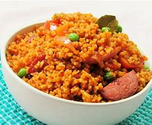

Jollof rice

Recipy for jollof
Jollof is a west African dish of rice cooked in a sauce of tomatoes and onions seasoned
with various spices and often accompanied by meat, fish or vegetables.
Ingredients for Jollof
- Rice
- Pepper mix
- Tomato paste
- Cooking oil
- Onions
- Seasoning powders
- Salt
- Carrots
- Meat
Steps for making jollof rice
- Wash the meat properly and rinse it repeatedly in a clean water
- Chop it into chewable pieces and add into a medium or large pot
- Add 1 large onion and some salt then cover with water to heat for sometime
- Let it boil for anything between 45-50 minutes while on medium heat
- Turn off the stove and set aside the meat broth to rest
- On the same pot, add onions and fry them untill they become soft and brownnish
- add a few garlic cloves and cook all together with the onions for some minutes while stirring continuously
- Add the meat and let it simmer on low heat for about an hour
- Blend tomatoes and the rest of the garlic untill they form a thuck paste. Transfer them to a separate bowl
- In a pan, saute some oil over medium or low heat
- Add the onion paste and cook untill the water evaporates and they start turning brown
- Pour in the tomato puree then add in some salt and add other spices
- Add the meat and broth then cook for 15-20 minutes while occasionally stirring untill the stew turns deep red
- Add in the rice, vegetables and just enough water to over the mixture
- Bring the mix to boil the cook on a low or medium heat for 25-30 minutes
Once all the water has evaporated from the rice, you can now serve it with your favourite soft drink or juice.